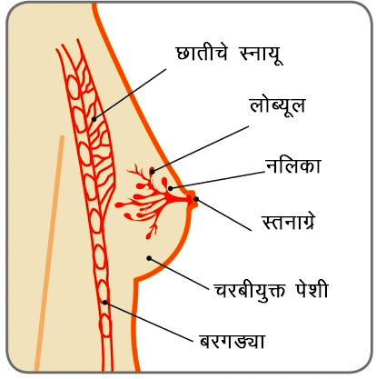
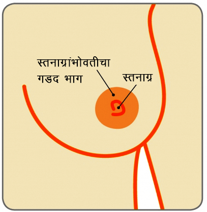
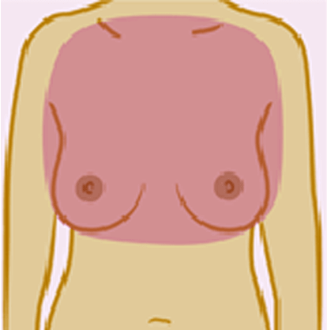
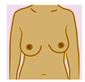
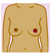
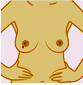
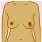
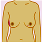
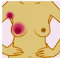

स्तनामधले अनेक बदल सौम्य (कँसरमुक्त) असण्याची शक्यता असते. तथापी, स्तनाच्या कँसरचे निदान करण्यासाठी स्तनांमधल्या बदलांबाबत लवकर माहिती मिळाल्यास त्यावर यशस्वी उपचार करण्याची उत्तम संधी असते. ज्यामुळे एखाद्या स्त्रीची जगण्याची संधी जास्त असते..
जरी ही माहिती प्रामुख्याने महिला सक्षमीकरणाच्या हेतूसाठी असली तरी पुरूषांनाही त्यांच्या स्तनपेशींमधल्या बदलांबाबत जागरूक असण्याची गरज आहे. पुरूषांनाही स्तनाचा कँसर होऊ शकतो याबाबत अनेक लोक अनभिज्ञ आहेत. दरवर्षी अगदी अल्प प्रमाणात पुरुषांना स्तनाचा कँसर होतो. (पुरुषांना स्तनाचा कँसर होण्याचं प्रमाण 1ः इतकं आहे दृ म्हणजे 1ध्100).
स्तन

स्तन, ज्यांना स्तनग्रंथी म्हणूनही संबोधतात, ती बाळाच्या जन्मावेळी संप्रेरकांच्या बदलांमुळे दूध उत्पन्न करणार्या अवयव ग्रंथींची जोडी असते. ती प्रामुख्याने चरबीयुक्त पेशींपासून बनलेली असते. ती छातीच्या समोरून सुरू होऊन काखेच्या भोवती वाढते. त्यांना अस्थिबंध आणि मोठ्या स्नायूंचा आधार मिळालेला असतो.
प्रत्येक स्तनात 15-20 ग्रंथी असतात. या ग्रंथी आणि नलिकांभोवती चरबी आणि आधारभूत पेशी असतात. (आकृती पाहा). प्रत्येक ग्रंथीत सुमारे 30 प्रमुख नलिका असतात ज्या स्तनाग्रांमध्ये उघडतात. स्तनाग्रांच्या सभोवती असलेल्या काळसर भागाला घेरा म्हणतात.
प्रत्येक काखेत सुमारे 20-30 लसिकाजोड (ग्रंथी) असतात. ज्यांच्या द्रवाचा निचरा स्तनामधून होतो. ही लसिका प्रणाली बनते ज्यामुळे शरीराला संसर्गापासून वाचण्यास मदत होते. एका स्तनाच्या आकारापेक्षा दुसर्या स्तनाचा आकार लहान-मोठा असू शकतो. हे अगदीच सामान्य आहे.
स्तनाग्र

स्तनाग्र सहसा पुढे असतात. ती प्रत्येक स्तनावर वेगवेगळ्या प्रकारचीही दिसत असतील. एक किंवा दोन्ही स्तनाग्र आतल्या बाजुला फिरलेले असणं हेही असामान्य नाही. हे जन्माच्या वेळेपासून असू शकते किंवा स्तनांचा विकास होताना तसे होऊ शकते. या स्तनांग्रांवर केस नसतात. पण काही स्त्रियांना सभोवतालच्या घेर्यामध्ये केस असू शकतात.
काही स्त्रियांना अधिकचे स्तन किंवा स्तनाची जोडी असू शकते. त्यांना अनावश्यक स्तन म्हणतात. ती शक्यतो खालच्या काखेत असतात. काही स्त्रियांना जादा स्तनाग्र किंवा स्तनाग्रे असू असतात. ती शक्यतो स्तनांच्या खाली आणि बेंबीच्या वरच्या बाजूला असतात. अनावश्यक स्तन आणि जादा स्तनाग्रे ही काही अडचण नाही. त्यामुळे ती काढून टाकण्याची गरज नसते.
काख मध्ये ऍक्सेसरीसाठी स्तन
स्तन सतत बदलत असतात. तारूण्य, पौगंडावस्था, बालपणातली वर्षे आणि मासिकपाळी या काळात स्तनांमध्ये बदल होत असतात. यामुळे स्त्रियांमधल्या संप्रेरकांमधील बदलांच्या विविध पातळ्यांवर परिणाम होतो..
अनेक मुलींच्या स्तनांचा विकास होण्यासाठी सुरूवात साधारणतरू 9 ते 11 वर्षे या वयापासून होतो. तो आधी किंवा नंतरही होऊ शकतो. स्तनांचा आकार वेगवेगळ्या प्रमाणात वाढू शकतो यात काहीच असामान्य नाही. स्तनाचा विकास होत असताना स्तनाच्या गाठी येऊ शकतात. या अगदीच सौम्य असतात आणि एकदा त्यांचं निदान झाल्यावर त्यांना कोणत्याही प्रकारच्या उपचारांची गरज नसते..
जेव्हा स्तनांचा विकास पूर्ण झालेला असतो तेव्हा मासिक पाळीशी (चक्रीय स्तन बदल) संबंधित बदल सामान्य असतात. पाळीच्या आधी काही वेळ स्तन मोठे, नाजूक किंवा गोळे झाल्यासारखे वाटू शकतात. पाळी संपल्यानंतर गोळे वाटण्याचा प्रकार कमी होतो किंवा नाहीसा होतो. (काही स्त्रियांना नाजूक, गोळे वाटणारे स्तन नेहमी असू शकतात). काही स्त्रियांच्या बाबतीत स्तनाचं दुखणं हे मासिक पाळीशी (चक्रीय स्तन बदल) संबंधित असतं. अधिक माहितीसाठी स्तन वेदनाबाबतची माहिती पाहा.
गर्भधारणेच्या काळात स्तनांमधले बदल हे स्तनपानाच्या तयारीसाठी असतात. सुरूवातील ते नाजूक आणि अधिक संवेदनशील बनतात. स्तन आणि त्याभोवतालचा घेरा मोठा (ज्याप्रमाणे दूध उत्पादक पेशी वाढतात त्याप्रमाणात) होतो. आणि त्वचेवरील रक्तवाहिन्या सहज लक्षात याव्यात अशा होतात. स्तनाग्रे काळसर होतात आणि ती गर्भधारणेनंतरही तशीच राहू शकतात.
स्तनपानाच्या वेळी मोठ्या प्रमाणात दूध निर्मिती होते. आणि दिवसातून अनेक वेळा स्तन आपला आकार बदलतात. एकदा का स्तनपान थांबवले की सहसा स्तन त्यांचा गर्भधारणेचा आकार असतो त्या आकारात परत जातात. हेही आहे की त्याचा वेगळा आकार किंवा कमी टणकपणा असू शकतो.
स्तनपेशींमध्ये वयाप्रमाणे बदल होतात. स्तनांचा टणकपणा हळूहळू कमी होऊ लागतो. दूध उत्पादक पेशींची जागा चरबी घेते. त्यामुळे स्तन खाली येतात. मासिक पाळीनंतर संप्रेरकांमधल्या पातळ्या घटतात आणि पाळी थांबते तेव्हा हे प्रखरपणे जाणवते. वय वाढतानाही स्तनांचा आकार कमी-जास्त होऊ शकतो. जर एचआरटी (हार्मोन रिप्लेसमेंट थेरपी) घेत असाल तर स्तन तुम्हाला काही प्रमाणात टणक आणि कधी कधी नाजूक पण वाटू शकते.
तुमच्या शरीराची काळजी घेण्यासाठी स्तन जागरूकता हा एक महत्त्वाचा घटक आहे. स्तन जागरूक असणे म्हणजे तुमच्या स्तनांविषयी तुम्हाला माहिती असणे आणि ते तुमच्या आयुष्यात कसे बदल आणतात हे जाणून घेणे. म्हणजे तुमचे स्तन कसे दिसतात, कसे असतात हे जाणून घेतल्यानंतर त्यात बदल होत असताना तुम्हाला असामान्य असे काही वाटणार नाही..
प्रत्येकाच्या स्तनांचे दिसणे आणि वाटणे वेगळे असते. काही जणांचे स्तन गोळ्यासारखे असतात, तर काही जणांचे स्तन इतरांपेक्षा मोठे असतात. स्तन हे वेगवेगळ्या आकारात असू शकतात. काहींची एक किंवा दोन्ही स्तनाग्रे आतल्या बाजुला वळलेली असतात, हे जन्माच्या वेळेपासूनच असू शकते किंवा स्तनांचा विकास होत असताना होऊ शकते. जेव्हा तुम्ही तुमचे स्तन तपासाल, तेव्हा कोणता वेगळा बदल तुमच्या लक्षात आला ते जाणून घेण्याचा प्रयत्न करा.
वेळोवेळी तुमचे स्तन कसे दिसतात, तुमच्या स्तनांबद्दल तुम्हाला काय वाटते हे जाणून घेण्याची सवय लावून घ्या. यासाठी कोणताही ठराविक प्रक्रिया नाही. आणि तुम्हाला त्याच वेळी वाटले पाहिजे असेही नाही. काही स्त्रिया कपडे घालताना किंवा काढताना, आंघोळ करताना किंवा बॉडी लोशन लावताना हे करतात. काही स्त्रिया त्यासाठी आरसा वापरतात तर काही वापरत नाहीत. तुम्हाला काय सोयीस्कर आहात हे तुम्ही ठरवू शकता. तुम्हाला तुमच्या स्तनाच्या प्रत्येक भागाबद्दल वाटणे हे खूप गरजेचं आहे. अगदी तुमच्या छातीच्या समोरून, काखेच्या खालपर्यंत आणि सभोवताली.
बदल जाणून घेण्यासाठी तुमच्या काखांपासून गळ्याच्या हाडापर्यंत तुमच्या स्तनाचे सर्व भाग तपासा. कोणत्या
बदलांबाबत तुम्ही जाकरूक असायाल हवे?
तुम्हाला जाणवणारे आणि तुमच्यासाठी नवीन असणार्या कोणत्याही बदलांविषयी तुम्ही जागरूक असायला हवे. जसे सौजन्य - ब्रेस्ट कँसर केअर, यूके

सौजन्य - ब्रेस्ट कँसर केअर, यूके

सौजन्य - ब्रेस्ट कँसर केअर, यूके
सौजन्य - ब्रेस्ट कँसर केअर, यूके

सौजन्य - ब्रेस्ट कँसर केअर, यूके

सौजन्य - ब्रेस्ट कँसर केअर, यूके

सौजन्य - ब्रेस्ट कँसर केअर, यूके
सौजन्य - ब्रेस्ट कँसर केअर, यूके

सौजन्य - ब्रेस्ट कँसर केअर, यूके

सौजन्य - ब्रेस्ट कँसर केअर, यूके
स्तन जागृती 5 मुद्द्यांचा मंत्र आहे